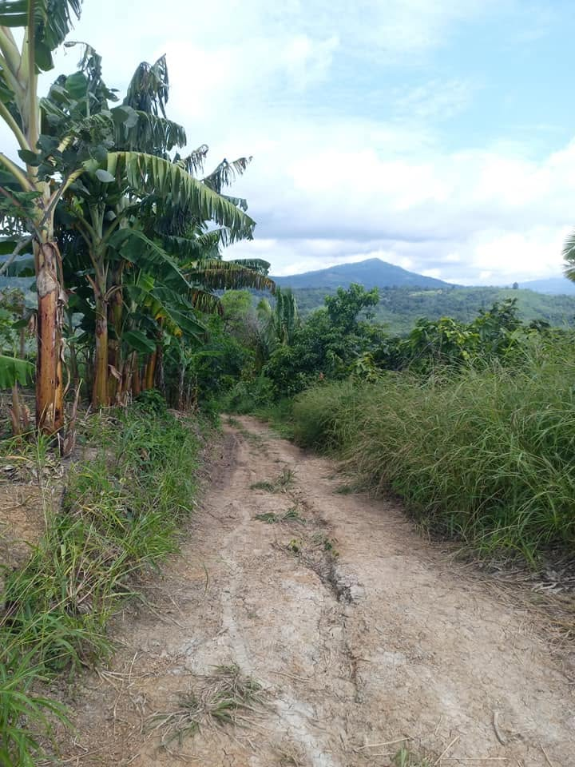

PEN4 4 ha

Terreno en venta Area 36,740 M2 Ubicación Carretera Aucaloma San Antonio de Cumbaza Entrando por la carretera san roque Arboles frutales Agua QUEBRADA ABUNDANTE todo el año Forma del terreno : Planuras y Relieves Aproveche, haga su propuesta. Indique su propuesta al 9️⃣8️⃣8️⃣0️⃣8️⃣0️⃣4️⃣8️⃣8️⃣